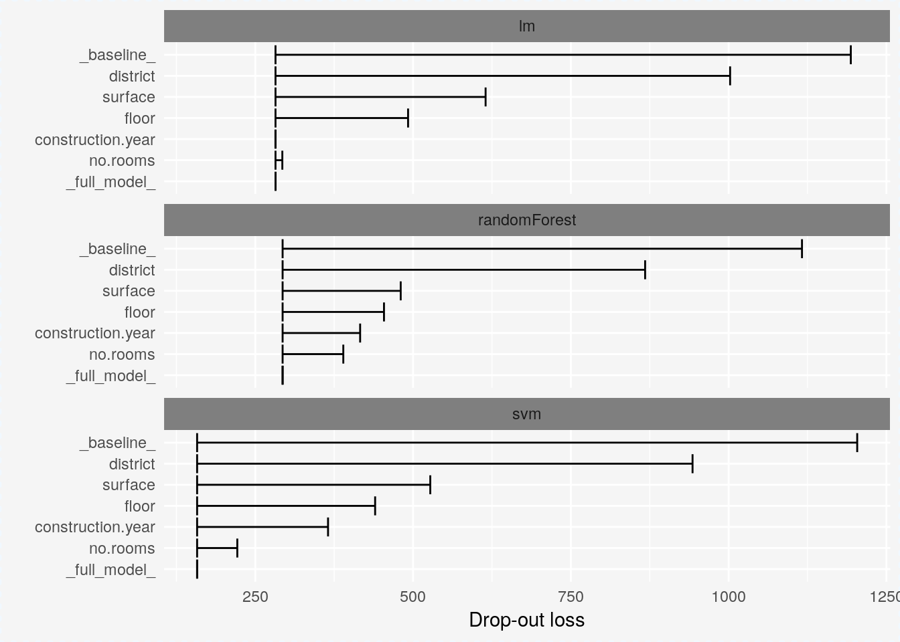
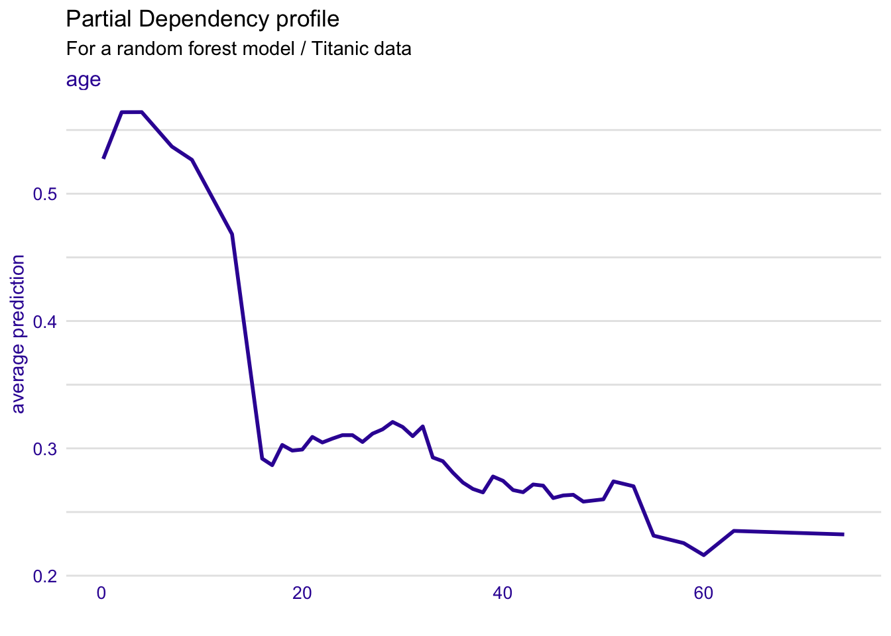

Chapter 11 BreakDown for Additive Variable Attributions
PBI: note that we are using completly different notations here and in the next chapter. Let’s keep only one, but which one?
In the Section 10 we introduced a method for calculation of variable attributions for linear models. This method is accurate, based directly on the linear structure of the model. But for most popular machine learning models we cannot assume that they are linear nor even additive.
In the Section 7 we introduced a method for calculation of local variable importance based on Ceteris Paribus Profiles. But the main disadvantage of this method is that importance scores do not sum up to final model predictions.
Break Down Plots solve problems with both these approaches. Note that the described method is also similar to the EXPLAIN algorithm introduced in (Robnik-Šikonja and Kononenko 2008) and implemented in (Robnik-Sikonja 2018) package.
11.1 Intuition
For any model we may repeat the intuition presented in the Section 10 to calculate variable contribution as shifts in expected model response after conditioning over consecutive variables. This intuition is presented in Figure 11.1.
Panel A shows distribution of model responses. The row all data shows the model response of the validation dataset. The red dot stands for average model response and it is an estimate of expected model response \(E [f(x)]\).
Since we want to calculate effects of particular values of selected variables we then condition over these variables in a sequential manner.
The next row in panel A corresponds to average model prediction for observations with variable class fixed to value 1st. The next for corresponds to average model prediction with variables class set to 1st and age set to 0, and so on. The last row corresponds to model response for \(x^*\).
Black lines in the panel A show how prediction for a single point changes after coordinate \(i\) is replaced by the \(x^*_i\). But finally we are not interested in particular changes, not even in distributions but only in averages - expected model responses.
The most minimal form that shows important information is presented in the panel C. Positive values are presented with green bars while negative differences are marked with red bar. They sum up to final model prediction, which is denoted by a violet bar in this example.
![(fig:BDPrice4) Break Down Plots show how variables move the model prediction from population average to the model prognosis for a single observation. A) The first row shows distribution of model predictions. Next rows show conditional distributions, every row a new variable is added to conditioning. The last row shows model prediction for a single point. Red dots stand for averages. B) Red dots stands for average conditional model response. C) Only variable contributions are presented, i.e. differences between consecutive conditional expectations.](figure/break_down_distr.png)
Figure 11.1: (fig:BDPrice4) Break Down Plots show how variables move the model prediction from population average to the model prognosis for a single observation. A) The first row shows distribution of model predictions. Next rows show conditional distributions, every row a new variable is added to conditioning. The last row shows model prediction for a single point. Red dots stand for averages. B) Red dots stands for average conditional model response. C) Only variable contributions are presented, i.e. differences between consecutive conditional expectations.
11.2 Method
Again, as in previous chapter, let \(v(f, x^*, i)\) stands for the contribution of variable \(x_i\) to prediction of model \(f()\) in point \(x^*\).
We expect that such contribution will sum up to the model prediction in a given point (property called local accuracy), so \[ f(x^*) = baseline + \sum_{i=1}^p v(f, x^*, i) \] where \(baseline\) stands for average model response.
Note that the equation above may be rewritten as
\[ E [f(X)|X_1 = x_1^*, \ldots, X+p = x_p^*] = E[f(X)] + \sum_{i=1}^p v(f, x^*, i) \] what leads to quite natural proposition for \(v(f, x^*_i, i)\), such as
\[ v(f, x^*_i, i) = E [f(X) | X_1 = x_1^*, \ldots, X_i = x_i^*] - E [f(X) | X_1 = x_1^*, \ldots, X_{i-1} = x_{i-1}^*] \] In other words the contribution of variable \(i\) is the difference between expected model response conditioned on first \(i\) variables minus the model response conditioned on first \(i-1\) variables.
Such proposition fulfills the local accuracy condition.
Unfortunately, for non-additive models, variable contributions depend on the ordering of variables. See for example Figure 11.2. In the first ordering the contribution of variable age is calculated as 0.01, while in the second the contribution is calculated as 0.13. Such differences are related to the lack of additivness of the model \(f()\).

Figure 11.2: (fig:ordering) Two different paths between average model prediction and the model prediction for a selected observation. Black dots stand for conditional average, red arrows stands for changes between conditional averages.
There are different attempts to solve the problem with the ordering.
A. choose an ordering in which variables with largest contributions are first. In this chapter we will describe a heuristic behind this approach. B. identify interactions that causes difference in attributions for different orderings and show these interactions. In the chapter 12 we will describe a heuristic behind this idea. C. calculate average across all possible orderings. There is \(p!\) possible orderings, be the may quite accurately approximate the average. This approach will be presented in the chapter 13.
So, let’s start with approach A. The easiest way to solve this problem is to use two-step procedure. In the first step variables are ordered and in the second step the consecutive conditioning is applied to ordered variables.
First step of this algorithm is to determine the order of variables for conditioning. It seems to be reasonable to include first variables that are likely to be most important, leaving the noise variables at the end. This leads to order based on following scores
\[ score(f, x^*, i) = \left| E [f(X)] - E [f(X)|X_i = x^*_i] \right| \] Note, that the absolute value is needed as variable contributions can be both positive and negative.
Once the ordering is determined in the second step variable contributions are calculated as
\[ v(f, x^*_i, i) = E [f(X) | X_{I \cup \{i\}} = x_{I \cup \{i\}}^*] - E [f(X) | X_{I} = x_{I}^*] \] where \(I\) is the set of variables that have scores smaller than score for variable \(i\).
\[ I = \{j: score(f, x^*, j) < score(f, x^*, i)\} \]
The time complexity of the first step id \(O(p)\) where \(p\) is the number of variables and the time complexity of the second step is also \(O(p)\).
11.3 Example: Titanic data
PBI: in this section, should we replicate figures and data already presented in Figure fig:BDPrice4 ?
Old:
Let us consider a random forest model created for HR data. The average model response is \(\bar f(x) = 0.385586\). For a selected observation \(x^*\) the table below presents scores for particular variables.
| Ei f(X) | scorei | |
|---|---|---|
| hours | 0.616200 | 0.230614 |
| salary | 0.225528 | 0.160058 |
| evaluation | 0.430994 | 0.045408 |
| age | 0.364258 | 0.021328 |
| gender | 0.391060 | 0.005474 |
Once we determine the order we can calculate sequential contributions
| variable | cumulative | contribution |
|---|---|---|
| (Intercept) | 0.385586 | 0.385586 |
| * hours = 42 | 0.616200 | 0.230614 |
| * salary = 2 | 0.400206 | -0.215994 |
| * evaluation = 2 | 0.405776 | 0.005570 |
| * age = 58 | 0.497314 | 0.091538 |
| * gender = male | 0.778000 | 0.280686 |
| final_prognosis | 0.778000 | 0.778000 |
11.4 Pros and cons
Break Down approach is model agnostic, can be applied to any predictive model that returns a single number. It leads to additive variable attribution. Below we summarize key strengths and weaknesses of this approach.
Pros
- Break Down Plots are easy to understand and decipher.
- Break Down Plots are compact; many variables may be presented in a small space.
- Break Down Plots are model agnostic yet they reduce to intuitive interpretation for linear Gaussian and generalized models.
- Complexity of Break Down Algorithm is linear in respect to the number of variables.
Cons
- If the model is non-additive then showing only additive contributions may be misleading.
- Selection of the ordering based on scores is subjective. Different orderings may lead to different contributions.
- For large number of variables the Break Down Plot may be messy with many variables having small contributions.
11.5 Code snippets for R
In this section we present key features of the iBreakDown package for R (Gosiewska and Biecek 2019a). This package covers all features presented in this chapter. It is available on CRAN and GitHub. Find more examples at the website of this package https://modeloriented.github.io/iBreakDown/.
Model preparation
As in previous chapters we will use the random forest (Breiman et al. 2018) model titanic_rf_v6 developed for the Titanic dataset (see Section 4.1).
Using the same model will help us (1) to understand how the Break Down method works, (2) to compare these explanations against methods presented in previous chapters.
So let restore the titanic_rf_v6 model.
library("DALEX")
library("randomForest")
titanic <- archivist::aread("pbiecek/models/27e5c")
titanic_rf_v6 <- archivist::aread("pbiecek/models/31570")Model exploration with the iBreakDown package is performed in three steps.
1. Create an explainer - wrapper around model and validation data.
Since all other functions work in a model agnostic fashion, first we need to define a wrapper around the model. Here we are using the explain() function from DALEX package (Biecek 2018).
This function was introduced in detailes in the ?? section.
explain_titanic_rf <- explain(model = titanic_rf_v6,
data = titanic[,-9],
y = titanic$survived == "yes",
label = "Random Forest v6")2. Select an observation of interest.
Break Down Plots decompose model prediction around a single observation. Let’s construct a data frame with corresponding values.
Here again we will use a data frame johny_d with a single row, that describes an 8-years old boy that travels in the first class without parents and siblings. Then, we obtain the model prediction for this instance with the help of the `predict()’ function.
johny_d <- data.frame(
class = factor("1st", levels = c("1st", "2nd", "3rd", "deck crew", "engineering crew",
"restaurant staff", "victualling crew")),
gender = factor("male", levels = c("female", "male")),
age = 8,
sibsp = 0,
parch = 0,
fare = 72,
embarked = factor("Southampton", levels = c("Belfast", "Cherbourg", "Queenstown", "Southampton"))
)
predict(explain_titanic_rf, johny_d)## [1] 0.4223. Calculate Break Down decomposition
The iBreakDown::break_down() function calculates Break Down contributions for a selected model around a selected observation.
The result from break_down() function is a data frame with additive attributions for selected observation.
The simplest use case is to set only the arguments - model explainers and observation of interest.
## contribution
## Random Forest v6: intercept 0.235
## Random Forest v6: age = 8 0.270
## Random Forest v6: class = 1st 0.086
## Random Forest v6: fare = 72 -0.046
## Random Forest v6: gender = male -0.083
## Random Forest v6: embarked = Southampton -0.003
## Random Forest v6: sibsp = 0 -0.006
## Random Forest v6: parch = 0 -0.030
## Random Forest v6: prediction 0.422The generic plot() function creates a Break Down plots.

The function break_down() can take more arguments. The most commonly used are:
xa wrapper over a model created with functionDALEX::explain(),new_observationan observation to be explained is should be a data frame with structure that matches the training data,orderif specified then it can be a vector of characters (column names) or integers (column indexes) that specify order of variable conditioning. If not specified (default) then a one-step heuristic is used to determine the order,keep_distributionslogical value.
ifTRUE, then additional diagnostic information is about conditional distributions is stored and can be plotted with the genericplot()function.
Let’s see these additional arguments in action.
First we will specify order. You can use integer indexes or variable names. Note that the second option is in most cases better because of higher readability. Additionally, to reduce clutter in the plot we set max_features = 3 argument in the plot() function.
library("iBreakDown")
bd_rf_order <- break_down(explain_titanic_rf,
johny_d,
order = c("class", "age", "gender", "fare", "parch", "sibsp", "embarked"))
plot(bd_rf_order, max_features = 3) 
The plot_distributions = TRUE argument of break_down() function enriches model response with additional information about conditional distribution.
It can be presented after setting plot_distributions = TRUE in the plot() function. Conditional distributions are presented as vioplots. Red dots stand for conditional average model response. Thin black lines between vioplots correspond to predictions for individual observations. With them we can trace how model predictions change after consecutive conditionings.
bd_rf_distr <- break_down(explain_titanic_rf,
johny_d,
order = c("class", "age", "gender", "fare", "parch", "sibsp", "embarked"),
keep_distributions = TRUE)
plot(bd_rf_distr, plot_distributions = TRUE) 
References
Robnik-Šikonja, Marco, and Igor Kononenko. 2008. “Explaining Classifications for Individual Instances.” IEEE Transactions on Knowledge and Data Engineering 20 (5): 589–600. https://doi.org/10.1109/TKDE.2007.190734.
Robnik-Sikonja, Marko. 2018. ExplainPrediction: Explanation of Predictions for Classification and Regression Models. https://CRAN.R-project.org/package=ExplainPrediction.
Gosiewska, Alicja, and Przemyslaw Biecek. 2019a. “iBreakDown: Uncertainty of Model Explanations for Non-additive Predictive Models.” https://arxiv.org/abs/1903.11420v1.
Breiman, Leo, Adele Cutler, Andy Liaw, and Matthew Wiener. 2018. RandomForest: Breiman and Cutler’s Random Forests for Classification and Regression. https://CRAN.R-project.org/package=randomForest.
Biecek, Przemyslaw. 2018. DALEX: Descriptive mAchine Learning Explanations. https://pbiecek.github.io/DALEX/.